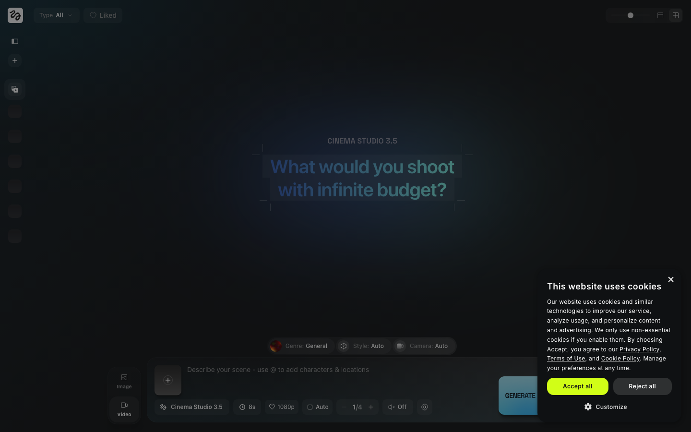

Part 1 · Cinema Studio 3.5 개념
0:00 – 0:30 · 30분Cinema Studio 3.5란?
힉스필드의 가장 정교한 영상 연출 도구입니다. 단순히 영상을 생성하는 것을 넘어, 실제 촬영 현장처럼 카메라를 제어하고 같은 인물·장소·소품을 여러 컷에 반복 사용할 수 있습니다.
- 광학 물리 시뮬레이션 — 실제 카메라처럼 초점거리·조리개·심도·렌즈 종류를 제어
- @태그 재사용 — Character·Location·Prop을 등록해 어느 씬에서든 일관되게 호출
- Mr. Higgs 샷 브레이크다운 — "이 장면 N컷으로 구성해줘"를 AI가 콘티로 제안
- 장르 기반 모션 로직 — action·drama·horror·comedy·epic 별 카메라·리듬 자동 적용
왜 "광학 물리"가 중요한가
일반 AI 영상 생성기는 "멋진 영상"을 만들지만 카메라가 어떻게 움직였는지를 통제할 수 없습니다. Cinema Studio 3.5는 실제 영화 촬영처럼 렌즈와 카메라 워크를 지정하기 때문에, 같은 장면이라도 의도한 연출로 뽑아낼 수 있습니다.
- 광각 렌즈로 공간을 넓게 → 같은 인물도 다른 느낌
- 얕은 심도(조리개 개방)로 인물만 또렷이 → 광고 톤
- 망원 + 푸시인 → 긴장감 있는 드라마 톤
오늘 다루는 범위는 Cinema Studio 3.5 한 가지에만 집중합니다. 빠른 클립 생성(Seedance)은 Day 3에서, Supercomputer 자동화는 Day 5에서 다룹니다.
Cinema Studio 3.5 실제 화면 (강사 캡처)

Seedance 2.0(Day 3) vs Cinema Studio 3.5
둘 다 영상을 만들지만 역할이 다릅니다. 빠르게 많이는 Seedance, 한 컷을 공들여 정밀하게는 Cinema Studio. 오늘은 후자를 집중적으로 파고듭니다.
| 항목 | Seedance 2.0 (Day 3) | Cinema Studio 3.5 (오늘) |
|---|---|---|
| 핵심 성격 | 빠른 클립 양산 | 정밀 연출 · 시네마틱 |
| 난이도 | 쉬움 | 중간~고급 |
| 카메라 제어 | 제한적 (기본 움직임) | ✅ 정밀 (초점거리·조리개·렌즈·패닝) |
| 장르 모션 | 기본 프리셋 | ✅ action·drama·horror·comedy·epic 세분 |
| @태그 재사용 | 없음 | ✅ Character·Location·Prop 일관 호출 |
| 멀티샷 콘티 | 수동 조합 | ✅ Mr. Higgs 자동 샷 브레이크다운 |
| 적합한 용도 | 일상 숏폼 · 빠른 컷 | 시네마틱 광고 · 일관된 시퀀스 |
선택 기준 한 줄: "오늘 30개 찍자" → Seedance, "이 한 씬을 영화처럼" → Cinema Studio 3.5.
Part 2 · 광학 카메라·렌즈 제어
0:30 – 1:10 · 40분3대 광학 레버
Cinema Studio 3.5 연출의 핵심은 단 세 가지 레버를 조합하는 것입니다. 이 세 가지만 이해하면 같은 장면을 수십 가지 톤으로 바꿀 수 있습니다.
① 카메라 무빙 (Camera Movement)
| 무빙 | 느낌 | 프롬프트 키워드 |
|---|---|---|
| 푸시인 (Push In) | 인물·감정에 점점 몰입 | camera slowly pushes in |
| 트래킹 (Tracking) | 인물을 따라 함께 이동 | tracking shot following subject |
| 크레인 (Crane) | 위아래로 스케일·공간감 | crane shot rising up |
| 오빗 (Orbit) | 인물 주위를 회전 | camera orbits around subject |
| 핸드헬드 (Handheld) | 생동감·긴박함 | handheld camera, slight shake |
② 렌즈 (Lens / 초점거리)
| 렌즈 | 초점거리 | 효과 |
|---|---|---|
| 광각 (Wide) | 14~35mm | 공간을 넓게, 배경 강조, 다이나믹한 원근 |
| 표준 (Standard) | 50mm | 눈으로 보는 자연스러운 시야 |
| 망원 (Telephoto) | 85~135mm | 인물 압축, 배경 흐림, 친밀한 클로즈업 |
③ 조리개 (Aperture / 심도)
| 조리개 | 심도 | 효과 |
|---|---|---|
| 개방 (f/1.4~2.8) | 얕은 심도 | 인물만 또렷, 배경 흐림 → 광고·인물 톤 |
| 중간 (f/4~5.6) | 중간 심도 | 인물+배경 적당히 → 라이프스타일 |
| 조임 (f/8~16) | 깊은 심도 | 전체가 또렷 → 풍경·에픽 와이드 |
@[내캐릭터] standing at @[로케이션],
85mm telephoto lens, shallow depth of field (f/1.8),
camera slowly pushes in, warm rim lighting,
cinematic drama style, photorealistic, high quality
프롬프트에 광학 요소를 넣는 순서: ① 누가·어디서(@태그) → ② 렌즈·조리개 → ③ 카메라 무빙 → ④ 조명·장르 → ⑤ 화질. 이 순서를 지키면 결과가 안정됩니다.
장르별 모션 로직 — 카메라 특성
Cinema Studio는 장르를 선택하면 해당 장르의 카메라 움직임·편집 리듬·조명 분위기를 자동으로 적용합니다. 같은 인물·장소라도 장르만 바꾸면 완전히 다른 영상이 됩니다.
| 장르 | 카메라 특성 | 활용 예시 |
|---|---|---|
| action | 빠른 컷, 핸드헬드 흔들림, 역동적 앵글, 짧은 호흡 | 스포츠 브랜드, 에너지 음료, 게임 트레일러 |
| drama | 느린 패닝, 부드러운 푸시인, 얕은 심도, 긴 호흡 | 감성 브랜드, 라이프스타일, 인물 중심 |
| horror | 정적 카메라 → 갑작스러운 움직임, 어두운 대비, 긴장감 | 할로윈 콘텐츠, 서스펜스 예고편 |
| comedy | 밝고 활기찬 카메라, 빠른 리액션 컷, 경쾌한 리듬 | 유머 콘텐츠, 음식·라이프스타일 숏폼 |
| epic | 와이드 드론샷, 크레인 상승, 깊은 심도, 스케일 강조 | 여행·자연 다큐, 대형 이벤트 오프닝 |
장르별 예시 — 강사 생성 이미지 (동일 인물·로케이션, 장르만 변경)


위 5장은 동일한 인물·장소에서 장르 설정만 바꿔 생성한 결과입니다. 씬 기획이 먼저이고, 장르는 카메라·조명·리듬을 한 번에 바꾸는 레버입니다.
action: handheld camera, quick cuts, dynamic angles, fast pace
drama: slow push in, shallow depth of field, soft panning, long takes
horror: static camera then sudden move, high contrast, dark mood
comedy: bright lively camera, quick reaction shots, upbeat rhythm
epic: wide drone shot, crane rising, deep focus, grand scale
Part 3 · @태그 시스템 & Mr. Higgs
1:10 – 1:30 · 20분@태그란?
한 번 등록한 인물·배경·소품을 @이름으로 불러와 어느 씬에서든 재사용할 수 있는 시스템입니다. 매번 같은 설명을 타이핑하지 않아도 되고, 여러 컷에 걸쳐 일관성이 유지됩니다.
- @Character — 인물 (얼굴·헤어·의상 일관 유지)
- @Location — 배경·장소 (같은 공간 재사용)
- @Prop — 소품 (제품·오브제 일관 등장)
-
1@Character 등록
샘플 인물(에셋 팩) 또는 Day 3에서 만든 캐릭터 이미지를 Cinema Studio → 캐릭터 라이브러리에 @이름으로 등록
-
2@Location 등록
배경 이미지(에셋 팩의 배경 3종 중 하나)를 로케이션 라이브러리에 @로케이션명으로 등록
-
3@Prop 등록 (선택)
반복 등장시킬 제품·소품이 있으면 @프롭명으로 등록
-
4프롬프트에서 호출
입력창에
@[캐릭터명],@[로케이션명]을 입력하면 해당 에셋이 자동 적용
@태그가 인식되려면 인물·로케이션이 먼저 라이브러리에 저장되어 있어야 합니다. 등록 전에 @를 쓰면 일반 텍스트로 처리됩니다.
Mr. Higgs · AI 샷 브레이크다운 어시스턴트
Mr. Higgs가 하는 일
"이 장면을 N컷으로 구성해줘"라고 요청하면 컷 순서·앵글·타이밍·카메라 움직임을 자동으로 제안합니다. 영화 콘티처럼 각 컷의 역할을 설명해주고, 제안 받은 뒤 원하는 컷만 개별 생성하면 됩니다.
- 요청: "루프탑에서 인물이 등장하는 장면을 5컷으로 구성해줘"
- Mr. Higgs 제안: 1컷(와이드 드론 진입) → 2컷(미디엄 걸어오는 샷) → 3컷(클로즈업 표정) → 4컷(리버스 도시 배경) → 5컷(아웃로 패닝)
- 각 컷 설명 클릭 → 해당 컷의 카메라·렌즈 파라미터 자동 적용 → Generate
@[내캐릭터]가 @[로케이션]에 등장하는 씬을 5컷으로 구성해줘.
첫 컷은 와이드로 공간을 보여주고, 마지막 컷은 클로즈업으로 마무리.
장르는 drama, 전체 무드는 cinematic and moody.
각 컷의 카메라 무빙·렌즈·심도도 함께 제안해줘.
멀티샷 시퀀스 구성 원리
한 시퀀스는 보통 와이드 → 미디엄 → 클로즈업 순으로 시선을 좁혀갑니다. Mr. Higgs는 이 영화 문법을 따라 컷을 제안합니다.
- 와이드(Establishing) — 어디서 일어나는지 공간 소개
- 미디엄 — 인물 행동·동선 전달
- 클로즈업 — 감정·디테일 강조 (시퀀스의 절정)
- 아웃로 — 패닝·풀백으로 여운 마무리
같은 @캐릭터·@로케이션을 5컷에 모두 사용하면, 컷이 바뀌어도 인물·공간이 흔들리지 않아 실제 영화 시퀀스처럼 이어집니다.
강사 시연 — 처음부터 끝까지 한 번
1:30 – 1:50 · 20분강사가 화면을 공유하며 @등록 → 장르 선택 → Mr. Higgs 5컷 요청 → 컷 생성 전 과정을 한 번에 보여줍니다. 따라치지 말고 흐름만 눈으로 익히세요. 실습은 시연 직후 시작합니다.
-
1Cinema Studio 진입 + @캐릭터·@로케이션 등록 샘플 인물 → @model, 배경 → @rooftop 으로 등록하는 과정 시연
-
2광학 레버 시연 — 같은 컷을 렌즈만 바꿔서 망원+얕은 심도 vs 광각+깊은 심도로 같은 인물이 어떻게 달라지는지 즉석 비교
-
3장르 토글 시연 drama → action 으로 장르만 바꿔 카메라·리듬이 어떻게 변하는지 비교
-
4Mr. Higgs 5컷 요청 → 컷 1개 생성 콘티 제안 받기 → 마음에 드는 컷 1개를 실제 Generate 까지
@캐릭터·@로케이션 등록
1:50 – 2:20 · 30분에셋 팩의 샘플 인물 3컷과 배경 3종을 사용합니다. Day 3에서 만든 캐릭터가 있으면 그걸 써도 됩니다.
-
1Cinema Studio 메뉴 진입 higgsfield.ai → Cinema Studio → 새 프로젝트
-
2@캐릭터 등록
에셋 팩의 샘플 인물 이미지 → 캐릭터 라이브러리에 이름 부여(@model 등)해 등록
없으면: Soul로 인물 이미지 1장 빠르게 생성 후 등록 -
3@로케이션 등록
에셋 팩의 배경 이미지 → 로케이션 라이브러리에 등록(@rooftop 등)
아래 루프탑 이미지처럼 단순한 배경 1장이면 충분합니다. 로케이션 예시 (루프탑) 이런 배경 이미지를 @rooftop 으로 등록
로케이션 예시 (루프탑) 이런 배경 이미지를 @rooftop 으로 등록 -
4등록 확인 — @호출 테스트
프롬프트에
@model standing at @rooftop입력 → 등록한 인물·배경이 자동 인식되는지 1컷 생성으로 확인
@[내캐릭터] standing at @[로케이션],
50mm standard lens, medium shot,
soft natural lighting, cinematic drama style,
photorealistic, high quality
🎯 실습 A 체크리스트
- Cinema Studio 새 프로젝트 생성
- 샘플 인물을 @캐릭터로 등록
- 배경을 @로케이션으로 등록
- @호출 프롬프트로 1컷 생성 → 인식 확인
- (도전) @Prop 소품 1개 추가 등록
장르별 컷 생성 — 같은 장면을 3개 장르로
2:20 – 3:00 · 40분실습 A에서 등록한 같은 @캐릭터·@로케이션으로, 장르만 바꿔 3개 버전을 만들어 톤 차이를 직접 비교합니다.
-
1기준 컷 확정
"@캐릭터가 @로케이션에 서 있는 미디엄 샷" 하나를 기준 장면으로 정함
-
2drama 버전 생성
장르 drama 선택 + 부드러운 푸시인·얕은 심도 키워드
-
3action 버전 생성
같은 장면, 장르 action + 핸드헬드·역동 앵글 키워드
-
4epic 버전 생성 + 3개 비교
같은 장면, 장르 epic + 와이드 드론·깊은 심도 → 세 버전을 나란히 비교
@[내캐릭터] at @[로케이션],
85mm telephoto lens, shallow depth of field,
camera slowly pushes in, warm soft lighting,
cinematic drama style, moody, photorealistic, high quality
@[내캐릭터] in dynamic motion at @[로케이션],
handheld camera tracking shot, dynamic low angle,
quick energy, dramatic side lighting,
cinematic action style, photorealistic, high quality
@[내캐릭터] at @[로케이션],
wide angle lens, deep focus, crane shot rising up,
grand scale, golden hour lighting,
cinematic epic style, photorealistic, ultra high quality
🎯 실습 B 체크리스트
- 기준 장면 1개 확정
- drama 버전 생성
- action 버전 생성
- epic 버전 생성
- 3개 버전 나란히 비교 → 가장 마음에 드는 톤 선택
Mr. Higgs로 멀티샷 시퀀스 — 5컷
3:00 – 3:40 · 40분이제 단일 컷을 넘어 이어지는 5컷 시퀀스를 만듭니다. Mr. Higgs에게 콘티를 받고, 와이드→클로즈업 순으로 실제 컷을 생성합니다.
-
1장르·무드 확정 후 Mr. Higgs에게 5컷 요청
실습 B에서 고른 장르로 통일 → "이 씬 5컷으로 구성해줘" 요청
-
2제안 콘티 검토
와이드 → 미디엄 → 클로즈업 → 리버스 → 아웃로 흐름인지 확인. 어색한 컷은 다시 요청.
-
3컷 순서대로 생성 (최소 3컷)
1컷(와이드) → 3컷(클로즈업) → 5컷(아웃로) 우선 생성. 같은 @캐릭터·@로케이션 유지
-
4시퀀스로 이어 보기
생성한 컷들을 순서대로 배치 → 인물·공간이 일관되게 이어지는지 확인
@[내캐릭터]가 @[로케이션]에서 등장하는 씬을 5컷 시퀀스로 구성해줘.
1컷 와이드 establishing → 2컷 미디엄 → 3컷 클로즈업(감정 절정)
→ 4컷 리버스 배경 → 5컷 패닝 아웃로.
장르는 drama, 무드는 cinematic and moody.
각 컷마다 카메라 무빙·렌즈·심도를 함께 적어줘.
@[내캐릭터] at @[로케이션], extreme close-up on face,
85mm telephoto lens, very shallow depth of field,
subtle camera push in, warm rim lighting,
cinematic drama style, emotional, photorealistic, high quality
🎯 실습 C 체크리스트
- Mr. Higgs에게 5컷 시퀀스 요청 → 콘티 받음
- 콘티가 와이드→클로즈업 흐름인지 확인
- 최소 3컷 실제 생성 (같은 @태그 유지)
- 생성 컷을 순서대로 배치해 이어 보기
- (도전) 5컷 전체 생성
시네마틱 광고/영상 컷 완성
3:40 – 4:00 · 40분 (병행)앞 실습에서 만든 컷들을 다듬어 광고처럼 보이는 완성 컷으로 마무리합니다. 광학 레버를 의도적으로 조절해 "톤"을 잡는 게 핵심입니다.
-
1광고 컨셉 한 줄 정하기
예: "감성 라이프스타일 브랜드 30초 티저" / "에너지 음료 액션 컷"
-
2오프닝 임팩트 컷 생성
광고는 첫 컷이 전부. 강한 광학 연출(블랙에서 리빌, 클로즈업 → 풀백)로 1컷
-
3제품·인물 강조 컷 (@Prop 활용)
얕은 심도로 제품 또는 인물만 또렷이. @Prop을 등록했다면 함께 호출
-
4마무리 CTA 컷 + 톤 통일
모든 컷의 조명·색감 톤을 통일. 마지막은 인물이 카메라를 보는 클로즈업으로 마무리
@[내캐릭터] appears dramatically at @[로케이션],
sudden camera reveal from black,
extreme close-up on eyes first, then pull back to reveal full scene,
85mm to wide pull, high contrast moody lighting,
cinematic drama style, photorealistic, ultra high quality
@[내캐릭터] with @[프롭] at @[로케이션],
macro detail shot, 85mm lens, very shallow depth of field (f/1.8),
slow orbit around subject, soft warm product lighting,
cinematic commercial style, photorealistic, high quality
@[내캐릭터] looking directly at camera with a confident smile,
slight camera push in, 50mm lens, shallow depth of field,
warm soft lighting, clean background,
cinematic lifestyle style, photorealistic, high quality
🎯 실습 D 체크리스트
- 광고 컨셉 한 줄 확정
- 오프닝 임팩트 컷 생성
- 제품·인물 강조 컷 생성
- 마무리 CTA 컷 생성
- 전체 컷의 조명·색감 톤 통일 확인
Cinema Studio 시네마틱 시퀀스 (Day 4)
오늘 배운 @태그·광학 제어·Mr. Higgs를 모두 사용해 일관된 멀티샷 시네마틱 시퀀스 1편을 완성하고 강사 안내 채널에 제출합니다.
제출 조건
| 항목 | 기준 |
|---|---|
| @태그 활용 | @캐릭터 + @로케이션을 모든 컷에 일관 사용 |
| 컷 수 | 이어지는 멀티샷 3컷 이상 |
| 장르·카메라 | 한 장르로 통일 + 의도한 카메라 무빙·렌즈 명시 |
| 시퀀스 흐름 | 와이드 → 클로즈업 등 시선 흐름이 자연스러움 |
| 제출처 | 강사 안내 채널 (컷 이미지/영상 + 사용 프롬프트) |
📤 제출 체크리스트
- @캐릭터·@로케이션을 모든 컷에 일관되게 사용
- 이어지는 멀티샷 3컷 이상 생성
- 장르 1개로 통일 + 카메라 무빙·렌즈 의도 명시
- 와이드→클로즈업 등 시선 흐름이 자연스러움
- 강사 안내 채널에 시퀀스 + 사용 프롬프트 제출 완료
막혔을 때
| 이런 상황이면 | 이렇게 해보세요 |
|---|---|
| Cinema Studio 설정이 너무 복잡함 | 광학 3대 레버(무빙·렌즈·조리개)만 먼저. 나머지는 기본값으로 두고 장르만 선택 |
| @태그가 인식 안 됨 | 인물·로케이션이 먼저 라이브러리에 저장되어 있어야 함. 등록 여부 재확인 |
| 컷마다 인물 얼굴이 달라짐 | 같은 @캐릭터를 모든 컷에 호출하고 있는지 확인. 텍스트로만 묘사하면 일관성 깨짐 |
| 심도(배경 흐림)가 안 먹음 | 조리개 키워드를 명시: shallow depth of field (f/1.8) + 망원 렌즈(85mm) 함께 사용 |
| 장르를 바꿔도 차이가 미미함 | 장르 선택만으로 부족하면 카메라 무빙 키워드(handheld / push in 등)를 직접 추가 |
| Mr. Higgs가 응답 안 함 | 페이지 새로고침 후 재시도. 또는 위 5컷 요청 프롬프트 템플릿을 직접 복사해 씀 |
| 컷 연결이 뚝뚝 끊김 | 모든 컷의 조명·색감 톤을 통일. 같은 @로케이션·장르로 고정하면 자연스럽게 이어짐 |
| 에셋 팩 샘플이 없음 | 목록 페이지에서 day-4-pack.zip 다운로드. 또는 Soul로 인물·배경 1장씩 즉석 생성 후 @등록 |